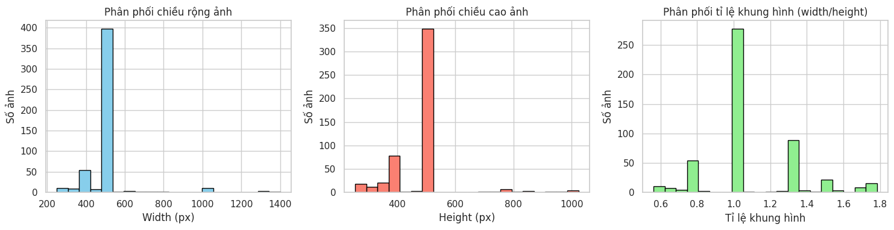
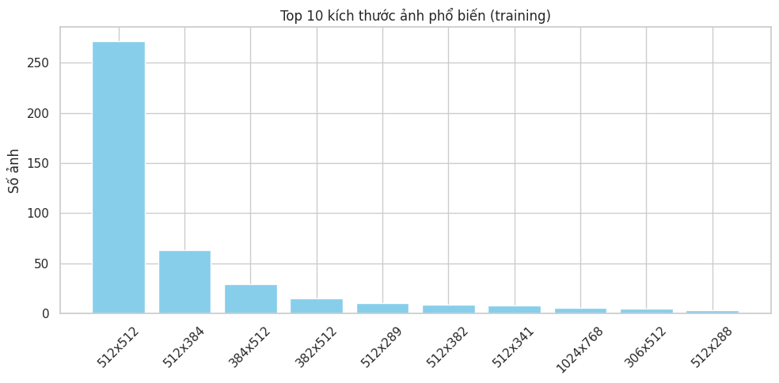
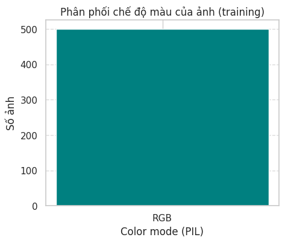
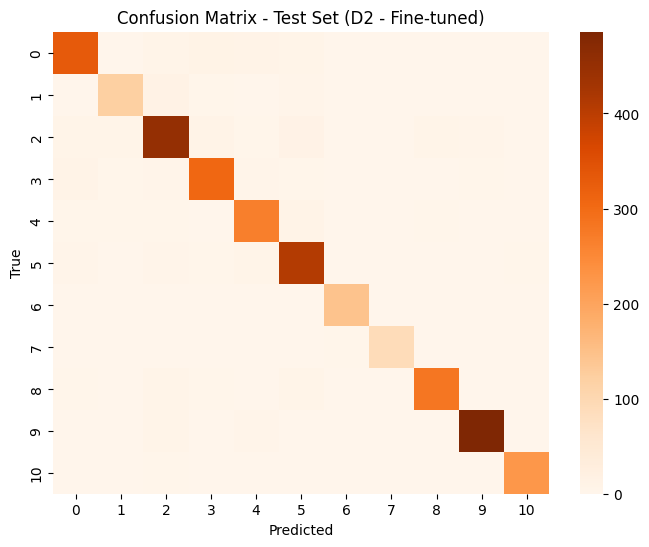
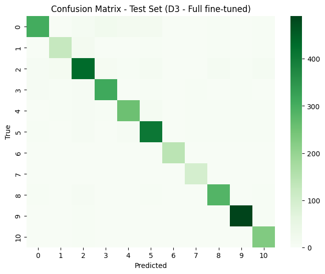
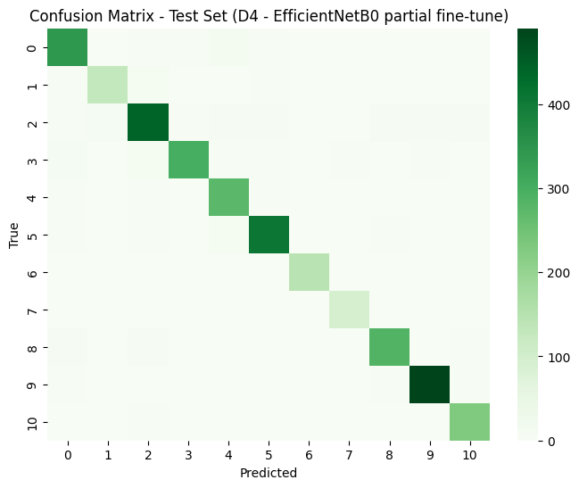
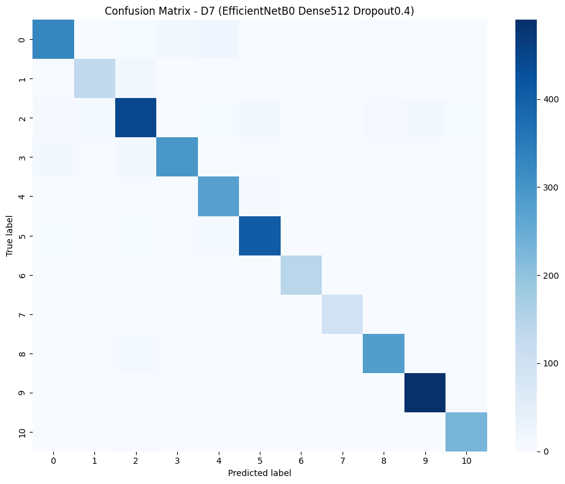

Bài tập lớn 3: Machine Learning với dữ liệu ảnh (Food-11 Dataset)
Machine Learning với Dữ Liệu Ảnh (Food-11 Dataset)
Tên học phần: Machine Learning
Mã học phần: CO3117
Học kỳ: 251
Năm học: 2025
Giảng viên hướng dẫn: TS. Lê Thành Sách
Nhóm thực hiện: CSML25
Dataset: Food-11 Image Dataset
Mô tả: Food-11 là tập dữ liệu khoảng 16.000–20.000 ảnh (bao gồm train, validation và evaluation) gồm ảnh của 11 loại món ăn khác nhau (ví dụ: cơm chiên, mì Ý, salad, bánh mì, thịt, tráng miệng, v.v.). Các ảnh là ảnh thật, được chụp trong điều kiện đa dạng về ánh sáng, góc chụp và bối cảnh — điều này khiến bài toán nhận dạng trở nên thách thức hơn.
Thành Viên Nhóm
| Sinh viên | ID | Đóng góp | |
|---|---|---|---|
| Nguyen Dang Khanh | 2311512 | khanh.nguyennttt040905@hcmut.edu.vn | 100% |
| Bui Ngoc Phuc | 2312665 | phuc.buif2175@hcmut.edu.vn | 100% |
| Dinh Hoang Chung | 2310359 | chung.dinhhoang@hcmut.edu.vn | 100% |
1. Khám Phá và Phân Tích Dữ Liệu (EDA)
1.1 Một vài ảnh đặc trưng của từng class

1.2 Phân phối số lượng ảnh theo lớp.
1.3 Phân phối ảnh theo chiều rộng, chiều cao và tỉ lệ khung hình.
Biểu đồ phân phối theo Chiều Rộng, Cao, Tỉ lệ khung hình (sử dụng ảnh histogram của bạn).
1.4 Top 10 kích thước ảnh phổ biến nhất.
Biểu đồ thể hiện Top 10 kích thước phổ biến nhất trong tập dữ liệu Food-11. (Hãy thay thế ảnh `top10_sizes_chart.png` bằng ảnh của bạn).
1.5 Phân phối chế độ màu (Color Mode).
Biểu đồ thể hiện phân phối chế độ màu của toàn bộ tập dữ liệu (có thể là biểu đồ tròn hoặc cột).
2. Pipeline Học Máy Truyền Thống (Feature-based)
Trong bài tập này, sinh viên thực hiện trích xuất đặc trưng (Feature Extraction) từ các mô hình học sâu tiền huấn luyện (Pretrained Models) và sử dụng các bộ phân loại truyền thống (SVM, Logistic Regression, Random Forest) để đánh giá độ phân tách của dữ liệu.
- Backbones: Transformer (Swin, ViT) và CNN (EfficientNetB0, ResNet50, VGG16).
- Classifiers: Logistic Regression (LogReg), Support Vector Machine (SVM), Random Forest (RF).
Tổng Hợp Kết Quả Thực Nghiệm
Bảng dưới đây thống kê toàn bộ kết quả độ chính xác (Accuracy), F1-Score và thời gian huấn luyện của các tổ hợp Backbone + Classifier.
| Backbone | Classifier | Val_Acc | Test_Acc | Val_F1 | Test_F1 | Train_Time (s) |
|---|---|---|---|---|---|---|
| swin | LogReg | 0.974052 | 0.978787 | 0.974348 | 0.979152 | 2.505264 |
| swin | SVM | 0.972303 | 0.976397 | 0.972943 | 0.976563 | 75.731172 |
| swin | RF | 0.951020 | 0.962354 | 0.949874 | 0.961367 | 46.137442 |
| vit | LogReg | 0.967055 | 0.972513 | 0.968515 | 0.974323 | 2.375472 |
| vit | SVM | 0.955977 | 0.967732 | 0.955564 | 0.969092 | 21.357576 |
| vit | RF | 0.947522 | 0.965342 | 0.946119 | 0.966289 | 38.918111 |
| efficientnetb0 | LogReg | 0.886297 | 0.905886 | 0.891606 | 0.908402 | 6.559273 |
| efficientnetb0 | SVM | 0.851020 | 0.864655 | 0.854654 | 0.861872 | 140.547287 |
| efficientnetb0 | RF | 0.828571 | 0.855393 | 0.817569 | 0.848199 | 48.556631 |
| resnet50 | LogReg | 0.855394 | 0.871228 | 0.861130 | 0.876076 | 5.618274 |
| resnet50 | SVM | 0.821283 | 0.841350 | 0.824937 | 0.845422 | 605.656146 |
| resnet50 | RF | 0.789213 | 0.821930 | 0.778472 | 0.818493 | 58.729441 |
| vgg16 | SVM | 0.802332 | 0.828204 | 0.808089 | 0.831796 | 9.683936 |
| vgg16 | LogReg | 0.769096 | 0.803406 | 0.782882 | 0.809085 | 9.652196 |
| vgg16 | RF | 0.761808 | 0.785181 | 0.756314 | 0.774574 | 27.744074 |
3. Pipeline Học Sâu (Deep Learning End-to-End)
Áp dụng Fine-tuning cho các kiến trúc học sâu (CNN và Transformer) để tối ưu hóa hiệu suất phân loại trực tiếp trên dữ liệu Food-11, sử dụng các kỹ thuật tiền xử lý ảnh và Augmentation hiệu quả.
Chiến Lược Thử Nghiệm
Chiến lược so sánh được chia thành 3 lớp chính:
- So sánh giữa các cách dùng cùng 1 backbone (ví dụ: freeze vs. unfreeze).
- So sánh giữa các backbone khác nhau (ví dụ: ResNet50 vs. EfficientNetB0).
- Thử nghiệm siêu tham số quan trọng (learning rate, batch size, augmentation).
3.1. Test 1: Baseline ResNet50 (Backbone Frozen)
Trong mô hình D1, nhóm giữ nguyên backbone ResNet50 pretrained và chỉ huấn luyện phần head mới gồm GlobalAveragePooling2D, Dense(256, ReLU), Dropout(0.3) và Dense(softmax).
Head này được thiết kế nhằm tận dụng đặc trưng đã học sẵn từ ResNet50, đồng thời cung cấp khả năng học phân loại phù hợp với 11 lớp của Food11 mà không làm tăng quá nhiều tham số. Cấu trúc gọn nhẹ giúp mô hình hội tụ nhanh, ổn định, và là baseline hiệu quả để so sánh với giai đoạn fine-tune (Test 2).
Bảng mô tả cấu hình và mục tiêu của Test 1.
| Nội dung thử nghiệm | Mục tiêu cụ thể |
|---|---|
| Backbone ResNet50 (pretrained, frozen) | Kiểm tra khả năng trích xuất đặc trưng của mô hình CNN đã được huấn luyện sẵn trên ImageNet, khi chỉ huấn luyện phần phân loại (head). |
| Learning rate = 1e-3 | Đánh giá tốc độ hội tụ và độ ổn định khi huấn luyện head mới. |
| Batch size = 32 | Cân bằng giữa tốc độ huấn luyện và độ ổn định của gradient. |
| Dropout = 0.3, Dense(256) | Giảm overfitting và tăng khả năng tổng quát hóa. |
| Augmentation (xoay, dịch, zoom, lật) | Tăng đa dạng dữ liệu, giúp mô hình học được tính biến thiên của ảnh món ăn. |
| Callback (EarlyStopping, ReduceLROnPlateau) | Theo dõi quá trình học, tự động dừng khi không cải thiện và giảm LR để tinh chỉnh mô hình. |
| Kích thước ảnh = 224×224 | Đảm bảo phù hợp với kiến trúc ResNet50 và đủ chi tiết cho phân loại. |
Báo Cáo Phân Loại Chi Tiết (Test Set)
precision recall f1-score support Bread 0.8373 0.8533 0.8452 368 Dairy product 0.8079 0.8243 0.8161 148 Dessert 0.8206 0.8600 0.8398 500 Egg 0.8541 0.8388 0.8464 335 Fried food 0.8877 0.8537 0.8703 287 Meat 0.8922 0.9005 0.8963 432 Noodles-Pasta 0.9795 0.9728 0.9761 147 Rice 0.9688 0.9688 0.9688 96 Seafood 0.9599 0.8680 0.9116 303 Soup 0.9663 0.9740 0.9701 500 Vegetable-Fruit 0.9576 0.9784 0.9679 231 accuracy 0.8942 3347 macro avg 0.9029 0.8993 0.9008 3347 weighted avg 0.8953 0.8942 0.8944 3347
Ma Trận Nhầm Lẫn (Confusion Matrix)
Ma trận nhầm lẫn chi tiết (Test 1 - ResNet50 Frozen).

3.2. Test 2: ResNet50 (Backbone Fine-tune)
Trong mô hình Test 2, nhóm tiếp tục sử dụng backbone ResNet50 pretrained, nhưng thay vì giữ nguyên như Test 1, nhóm **mở (unfreeze) một phần các lớp cuối** của backbone để fine-tune cùng với phần head mới.
Cấu trúc head vẫn giữ nguyên (GlobalAveragePooling2D → Dense(256, ReLU) → Dropout(0.3) → Dense(softmax)), nhưng giờ đây một số lớp cuối của ResNet50 cũng được cập nhật trọng số trong quá trình huấn luyện.
Learning rate được giảm xuống (ví dụ 1e-4) so với Test 1, nhằm tránh “phá vỡ” các trọng số pretrained và cho phép mô hình tinh chỉnh nhẹ nhàng các đặc trưng sâu, giúp phù hợp hơn với dữ liệu Food11. Nhờ đó, Test 2 kỳ vọng cải thiện độ chính xác so với Test 1.
Bảng mô tả cấu hình và mục tiêu của Test 2.
| Nội dung thử nghiệm | Mục tiêu cụ thể |
|---|---|
| Backbone ResNet50 (pretrained, unfreeze ~40 lớp cuối) | Đánh giá hiệu quả của việc fine-tune một phần backbone so với mô hình chỉ huấn luyện head. Kiểm tra khả năng học thêm đặc trưng chuyên biệt của dữ liệu món ăn. |
| Learning rate = 1e-4 | Giảm tốc độ cập nhật trọng số để tránh phá vỡ các đặc trưng pretrained, đảm bảo fine-tuning diễn ra ổn định. |
| Batch size = 32 | Giữ nguyên để đảm bảo tính so sánh công bằng với Test 1. |
| Dropout = 0.3, Dense(256) | Giảm overfitting khi thêm nhiều tham số trainable từ backbone. |
| Augmentation (xoay, dịch, zoom, lật) | Duy trì đa dạng dữ liệu, giúp backbone học thêm đặc trưng bền vững khi fine-tune. |
| Callback (EarlyStopping, ReduceLROnPlateau) | Ổn định quá trình học khi bắt đầu cập nhật trọng số backbone, tự động giảm LR khi val_loss ngừng cải thiện. |
| Kích thước ảnh = 224×224 | Giữ nguyên để đảm bảo tương thích với kiến trúc ResNet50 và công bằng giữa các test. |
Báo Cáo Phân Loại Chi Tiết (Test Set)
precision recall f1-score support Bread 0.9300 0.9022 0.9159 368 Dairy product 0.9044 0.8311 0.8662 148 Dessert 0.9040 0.9040 0.9040 500 Egg 0.9192 0.9164 0.9178 335 Fried food 0.9048 0.9268 0.9157 287 Meat 0.9031 0.9491 0.9255 432 Noodles-Pasta 0.9605 0.9932 0.9766 147 Rice 0.9579 0.9479 0.9529 96 Seafood 0.9592 0.9307 0.9447 303 Soup 0.9759 0.9720 0.9739 500 Vegetable-Fruit 0.9657 0.9740 0.9698 231 accuracy 0.9322 3347 macro avg 0.9350 0.9316 0.9330 3347 weighted avg 0.9324 0.9322 0.9321 3347
Ma Trận Nhầm Lẫn (Confusion Matrix)
Ma trận nhầm lẫn chi tiết (Test 1 - ResNet50 Frozen).
3.3. Test 3: ResNet50 (Backbone Fine-tune Toàn bộ)
Trong mô hình Test 3, toàn bộ các lớp của backbone ResNet50 pretrained được **unfreeze và cập nhật** trong quá trình huấn luyện. Điều này biến mô hình thành một pipeline end-to-end thực sự, nơi mọi tầng đều tham gia học lại, cho phép mạng tinh chỉnh sâu hơn các đặc trưng phù hợp với dữ liệu món ăn (Food11).
Cấu trúc head giữ nguyên. Tuy nhiên, vì toàn bộ backbone được mở khóa, nhóm **giảm learning rate đáng kể (khoảng 1e-5)** để tránh “làm hỏng” các trọng số pretrained, đồng thời sử dụng EarlyStopping và ReduceLROnPlateau nhằm kiểm soát quá trình hội tụ và hạn chế overfitting.
Bảng mô tả cấu hình và mục tiêu của Test 3 (Full Fine-tune).
| Nội dung thử nghiệm | Mục tiêu cụ thể |
|---|---|
| Backbone ResNet50 (pretrained, unfreeze toàn bộ) | Kiểm tra hiệu quả của việc cập nhật toàn bộ trọng số backbone trong huấn luyện end-to-end, đánh giá khả năng học sâu đặc trưng riêng của Food11. |
| Learning rate = 1e-5 | Hạ LR thấp để tránh phá vỡ trọng số pretrained khi toàn bộ mạng được cập nhật. |
| Batch size = 32 | Giữ nguyên để đảm bảo tính so sánh với các mô hình D1–D2. |
| Dropout = 0.3, Dense(256) | Tiếp tục dùng regularization nhằm giảm overfitting khi số lượng tham số huấn luyện tăng đáng kể. |
| Augmentation (xoay, dịch, zoom, lật) | Cung cấp thêm biến thể hình ảnh để hỗ trợ mô hình học tổng quát hóa tốt hơn trong fine-tune toàn phần. |
| Callback (EarlyStopping, ReduceLROnPlateau) | Kiểm soát quá trình hội tụ, giúp mô hình dừng đúng lúc khi toàn bộ backbone bắt đầu điều chỉnh trọng số. |
| Kích thước ảnh = 224×224 | Giữ nguyên để duy trì độ chi tiết và đảm bảo tính nhất quán trong pipeline huấn luyện. |
Báo Cáo Phân Loại Chi Tiết (Test Set)
precision recall f1-score support Bread 0.9354 0.8261 0.8773 368 Dairy product 0.8630 0.8514 0.8571 148 Dessert 0.8889 0.8640 0.8763 500 Egg 0.8983 0.9224 0.9102 335 Fried food 0.8975 0.8850 0.8912 287 Meat 0.8985 0.9421 0.9198 432 Noodles-Pasta 0.9931 0.9728 0.9828 147 Rice 0.9320 1.0000 0.9648 96 Seafood 0.9344 0.9406 0.9375 303 Soup 0.9742 0.9820 0.9781 500 Vegetable-Fruit 0.8937 0.9827 0.9361 231 accuracy 0.9184 3347 macro avg 0.9190 0.9245 0.9210 3347 weighted avg 0.9188 0.9184 0.9179 3347
Ma Trận Nhầm Lẫn (Confusion Matrix)
Ma trận nhầm lẫn chi tiết (Test 1 - ResNet50 Frozen).
3.4. Test 4: EfficientNetB0 (Backbone Partial Fine-tune)
Trong mô hình Test 4, nhóm thay backbone ResNet50 bằng EfficientNetB0 – một kiến trúc CNN hiện đại, được thiết kế tối ưu giữa độ chính xác và số lượng tham số. Tương tự Test 2, backbone EfficientNetB0 được khởi tạo từ trọng số pretrained trên ImageNet, sau đó chỉ unfreeze một phần các lớp cuối để fine-tune cùng với phần head mới.
Cấu trúc head vẫn được giữ nguyên như các test trước. Để phù hợp với EfficientNet, pipeline dữ liệu của Test 4 sử dụng **hàm tiền xử lý riêng** (eff_preprocess), trong khi các yếu tố khác như kích thước ảnh 224×224, batch size, augmentation, callback đều được giữ giống Test 2.
Bảng mô tả cấu hình của Test 4 (EfficientNetB0 Partial Fine-tune).
| Nội dung thử nghiệm | Mục tiêu cụ thể |
|---|---|
| Backbone EfficientNetB0 (pretrained, partial fine-tune) | Đánh giá khả năng khái quát hóa của kiến trúc EfficientNet so với ResNet50 (Test 2). |
| Hàm tiền xử lý riêng (eff_preprocess) | Đảm bảo tính tương thích với kiến trúc EfficientNet. |
| Learning rate = 1e-4 | Tương tự Test 2, giảm tốc độ cập nhật trọng số để tinh chỉnh một phần backbone. |
| Các tham số khác | Giữ nguyên (Batch size=32, Dropout=0.3, Augmentation, Callback) để đảm bảo tính so sánh công bằng. |
Báo Cáo Phân Loại Chi Tiết (Test Set)
precision recall f1-score support Bread 0.9167 0.9266 0.9216 368 Dairy product 0.9143 0.8649 0.8889 148 Dessert 0.9024 0.8880 0.8952 500 Egg 0.9677 0.8955 0.9302 335 Fried food 0.8867 0.9547 0.9195 287 Meat 0.9575 0.9398 0.9486 432 Noodles-Pasta 0.9797 0.9864 0.9831 147 Rice 0.9223 0.9896 0.9548 96 Seafood 0.9535 0.9472 0.9503 303 Soup 0.9761 0.9800 0.9780 500 Vegetable-Fruit 0.9268 0.9870 0.9560 231 accuracy 0.9376 3347 macro avg 0.9367 0.9418 0.9387 3347 weighted avg 0.9381 0.9376 0.9374 3347
Ma Trận Nhầm Lẫn (Confusion Matrix)
Ma trận nhầm lẫn chi tiết (Test 4 - EfficientNetB0 Partial Fine-tune).
3.5. Test 5: Tối ưu hóa Head EfficientNetB0 (Hyperparameter Tuning)
Trong Test 5, nhóm tiếp tục kế thừa cấu trúc của mô hình EfficientNetB0 partial fine-tune (Test 4), nhưng tập trung thử nghiệm các siêu tham số ở phần head — cụ thể là **tăng kích thước tầng Dense từ 256 → 512** và **tăng hệ số Dropout từ 0.3 → 0.4**. Backbone EfficientNetB0 vẫn được giữ nguyên cơ chế fine-tune một phần.
Mục tiêu là đánh giá tác động của việc mở rộng head lên hiệu năng tổng thể — kiểm tra xem việc tăng dung lượng mô hình ở tầng phân loại có giúp biểu diễn tốt hơn các đặc trưng đã trích xuất từ backbone, hay ngược lại gây ra overfitting.
Báo Cáo Phân Loại Chi Tiết (Test Set)
precision recall f1-score support Bread 0.9162 0.8913 0.9036 368 Dairy product 0.9028 0.8784 0.8904 148 Dessert 0.8958 0.8940 0.8949 500 Egg 0.9279 0.8836 0.9052 335 Fried food 0.8867 0.9547 0.9195 287 Meat 0.9465 0.9421 0.9443 432 Noodles-Pasta 0.9931 0.9728 0.9828 147 Rice 0.9314 0.9896 0.9596 96 Seafood 0.9561 0.9340 0.9449 303 Soup 0.9665 0.9800 0.9732 500 Vegetable-Fruit 0.9540 0.9870 0.9702 231 accuracy 0.9325 3347 macro avg 0.9343 0.9370 0.9353 3347 weighted avg 0.9343 0.9325 0.9330 3347
Ma Trận Nhầm Lẫn (Confusion Matrix)
Ma trận nhầm lẫn chi tiết (Test 5 - EfficientNetB0 Head Tuning).
